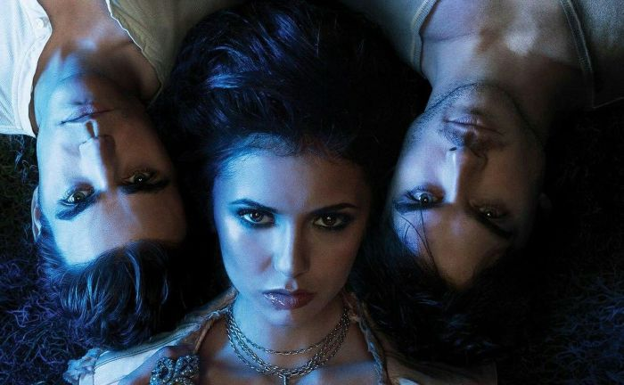
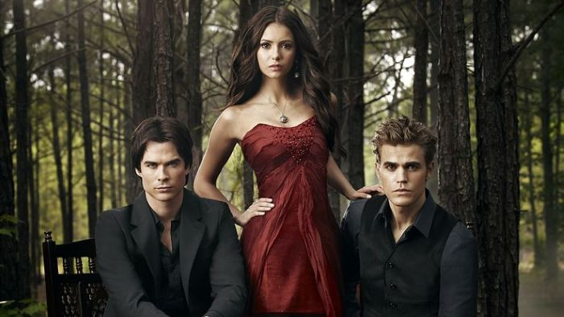

Sobre a série
The Vampire Diaries (Diários de um Vampiro) é uma série de drama sobrenatural americana baseada nos livros de L. J. Smith. A série estreou em 2009 e terminou em 2017, com 8 temporadas.
Na misteriosa cidade de Mystic Falls, onde nada é o que parece, Elena Gilbert tenta reconstruir a sua vida depois de uma tragédia familiar. Mas tudo muda quando ela conhece o Stefan Salvatore, um rapaz misterioso que esconde um segredo: é um vampiro de 162 anos.
Com a chegada do seu irmão, Damon Salvatore, um vampiro muito perigoso e irresistível, Elena vê-se envolvida num mundo sobrenatural cheio de segredos, paixões proibidas e rivalidades antigas. Entre vampiros, bruxas, lobisomens e amores impossíveis, Mystic Falls esconde muito mais do que aparenta. E, por vezes, amar alguém pode ser tão perigoso como enfrentar a própria morte.

Personagens principais
- Elena Gilbert
- Stefan Salvatore
- Damon Salvatore
Quer saber mais? Ver a página da série na Wikipédia